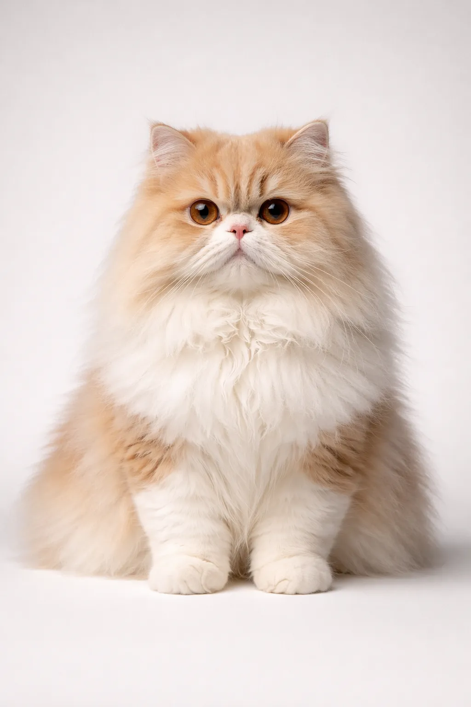
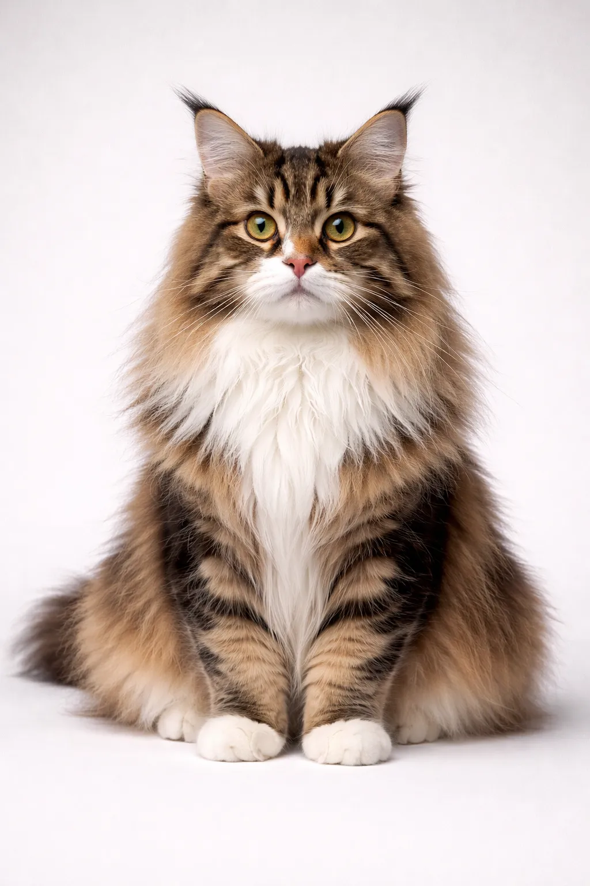
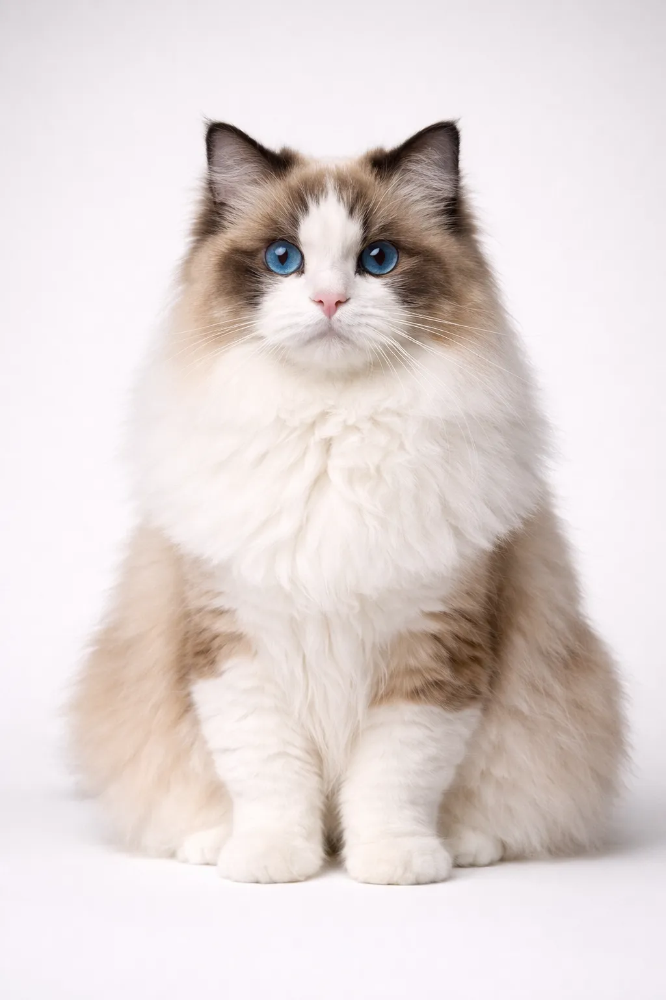
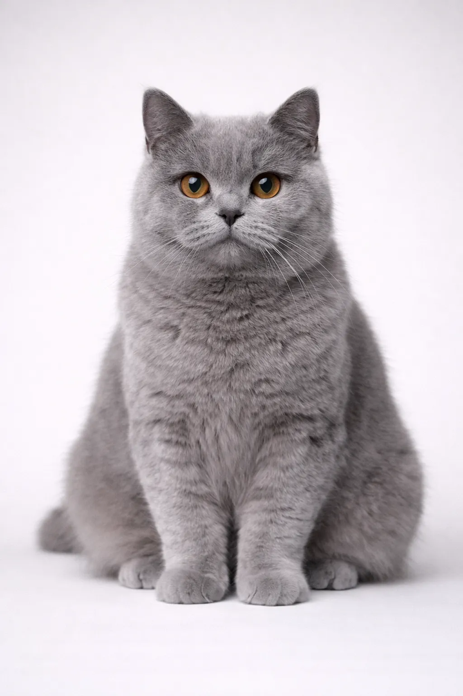
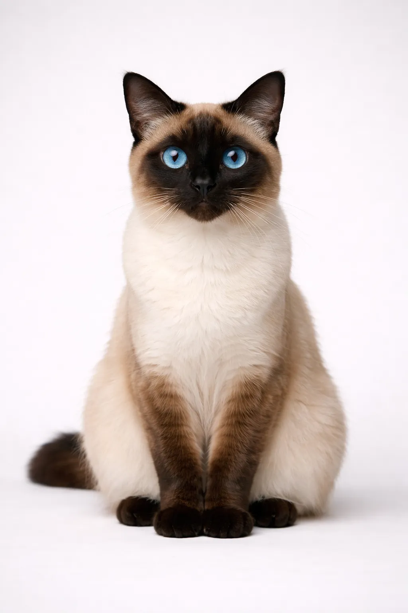
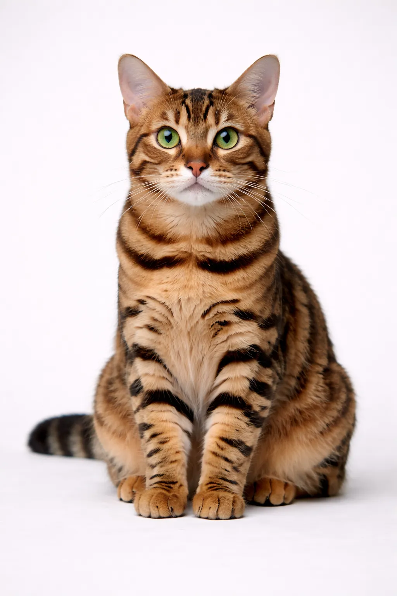
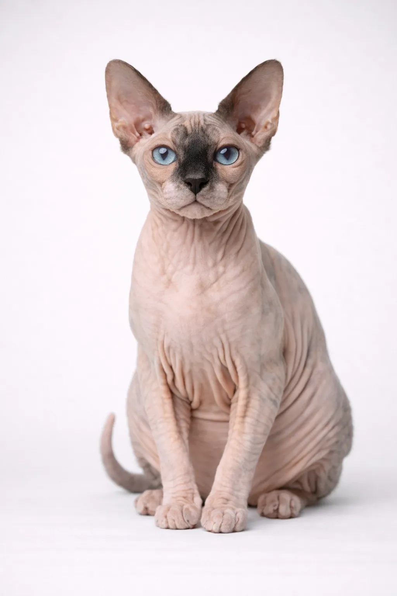
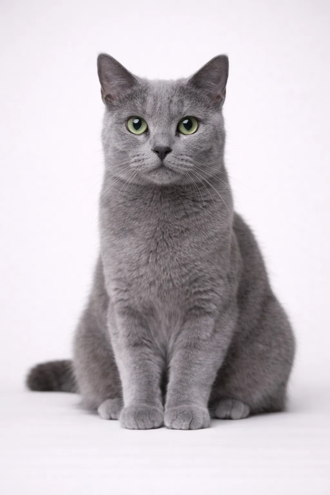

Finde deine
perfekte Katzenrasse
Entdecke, welche Katzenrasse perfekt zu deinem Lebensstil passt. Vergleiche Eigenschaften, mach unser Quiz und finde deinen idealen Fellfreund.
Beliebte Rassen
Die beliebtesten Katzenrassen weltweit








Nach Eigenschaften suchen
Finde Katzen, die zu deinem Lebensstil passen
Expertenratgeber
Ausführliche Artikel, die dir helfen, die perfekte Katze zu wählen
Häufig gestellte Fragen
Wie wähle ich die richtige Katzenrasse für meinen Lebensstil?
Berücksichtige deinen Wohnraum, dein Aktivitätsniveau, Zeit für die Pflege und deine Familiensituation. Unser Rassen-Quiz stellt diese Fragen und findet kompatible Rassen basierend auf deinen Antworten.
Welche Katzenrassen eignen sich am besten für Wohnungen?
Perser, Ragdoll, Britisch Kurzhaar, Russisch Blau und Scottish Fold sind ausgezeichnete Wohnungskatzen. Sie sind ruhig, leise und passen sich gut an kleinere Räume an.
Gibt es hypoallergene Katzenrassen?
Keine Katze ist 100% hypoallergen, aber einige produzieren weniger Fel d 1-Protein, das Allergien auslöst. Sibirische, Balinesen, Russisch Blau und Sphynx werden für Allergiker empfohlen.
Welche Katzenrassen eignen sich am besten für Familien mit Kindern?
Ragdoll, Maine Coon, Birma und Burma sind ausgezeichnete Familienkatzen. Sie sind geduldig, verspielt und in der Regel gut mit Kindern.
Welche Katzen haaren am wenigsten?
Sphynx (haarlos), Cornish Rex, Devon Rex, Siamese und Bengal sind Rassen mit geringem Haarausfall. Regelmäßiges Bürsten hilft bei allen Rassen.